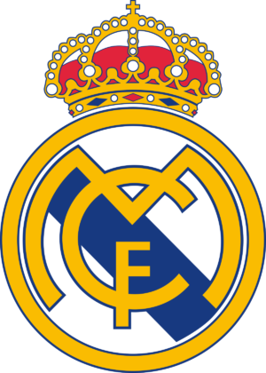
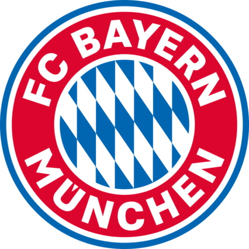
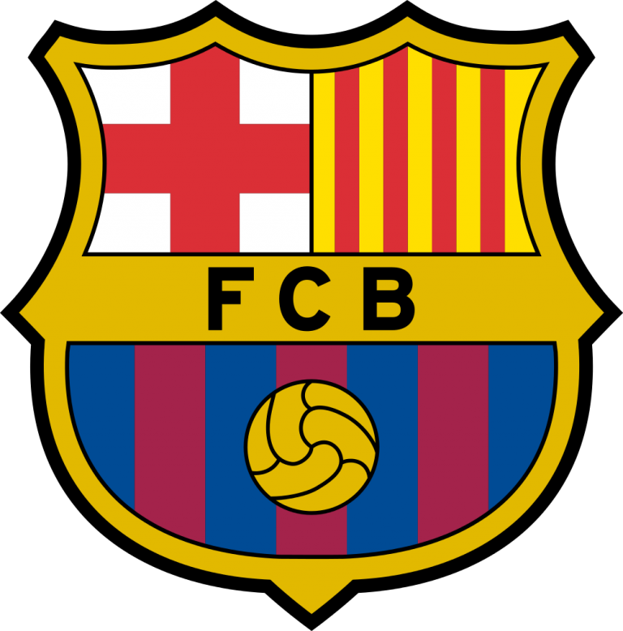

LA CHAMPIONS LEAGUE
La Liga de Campeones de la UEFA es una competición de fútbol organizada por la Unión de Asociaciones Europeas de Fútbol (UEFA) y disputada por los mejores clubes de Europa. La Champions, como es conocida coloquialmente, es una de las competiciones más prestigiosas del mundo. El ganador disputa la Supercopa de Europa y la Copa Mundial de Clubes de la FIFA en representación de la confederación. La Champions League se celebra normalmente de septiembre a junio del año siguiente, pudiendo variar el calendario dependiendo de la temporada. La competición se creó en la temporada 1955-56 bajo el nombre de Copa de Clubes Campeones Europeos, con un formato de eliminatorias directas. El torneo fue reestructurado en el año 1992 incluyendo por primera vez el formato de competición de liga previo a la fase eliminatoria. Posteriormente el nombre fue rebautizado por el actual en la edición 1992-93.
Equipos mas ganadores de la competicion
-
Real Madrid Club de Futbol
13 Titulos
Títulos ganados en las temporadas: 1955-1956, 1956-1957, 1957-1958, 1958-1959, 1959-1960, 1965-1966, 1997-1998, 1999-2000, 2001-2002, 2013-2014, 2015-2016, 2016-2017 y 2017-2018.
-
Associazione Calcio Milan
7 Titulos

Títulos ganados en las temporadas: 1962-1963, 1968-1969, 1988-1989, 1989-1990, 1993-1994, 2002-2003 y 2006-2007.
-
Liverpool Futbol Club
6 Titulos

Títulos ganados en las temporadas: 1976-1977, 1977-1978, 1980-1981, 1983-1984, 2004-2005 y 2018-2019.
-
Bayern de Munich
6 Titulos
Títulos ganados en las temporadas: 1973-1974, 1974-1975, 1975-1976, 2000-2001, 2012-2013 y 2019-2020.
-
Futbol Club Barcelona
5 Titulos
Títulos ganados en las temporadas: 1991-1992, 2005-2006, 2008-2009, 2010-2011 y 2014-2015.